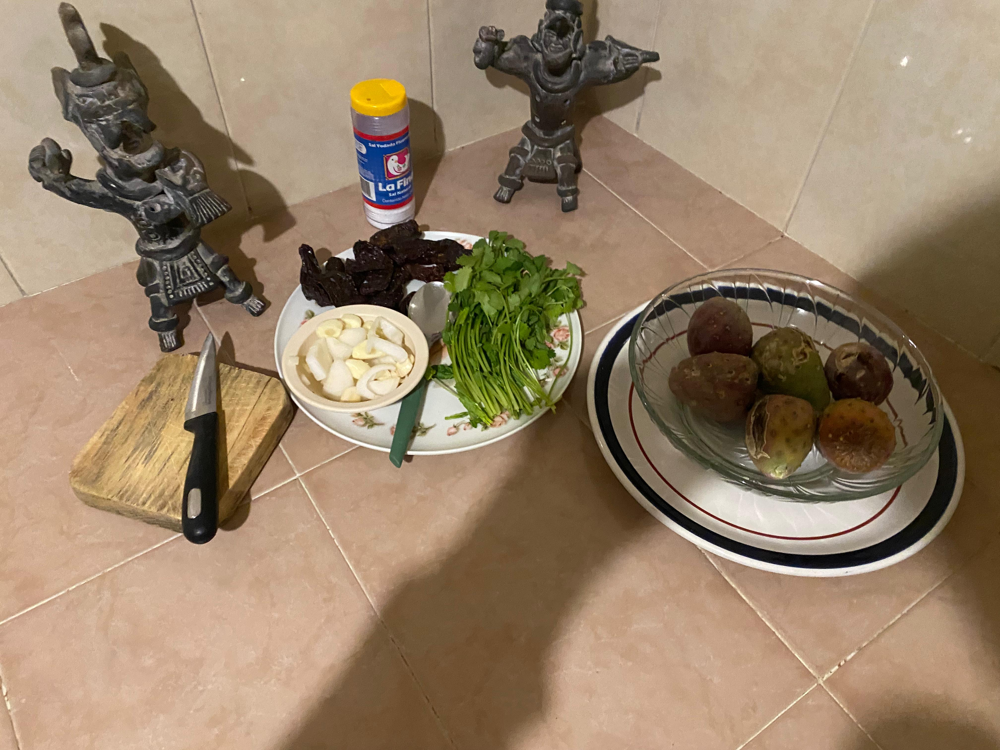
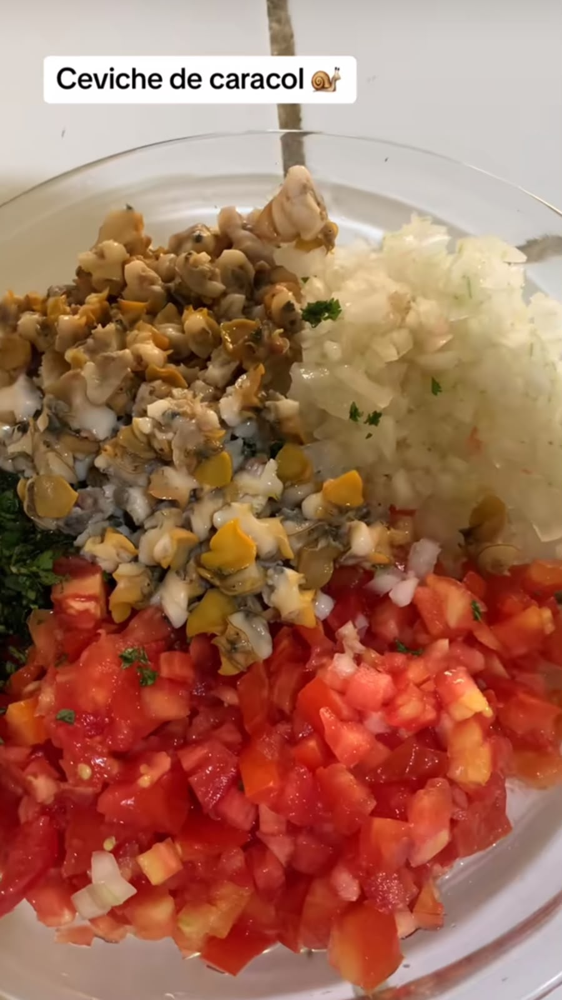
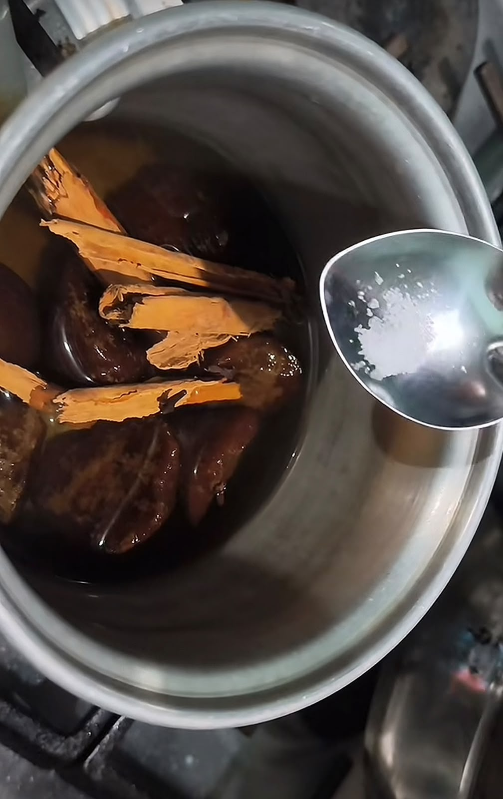
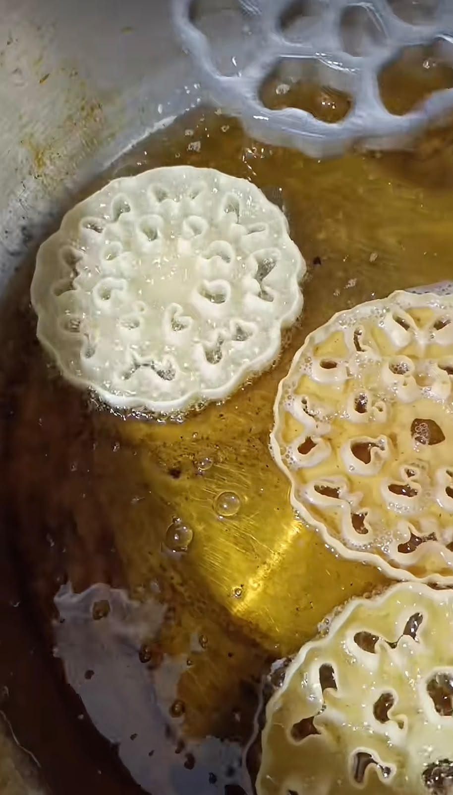
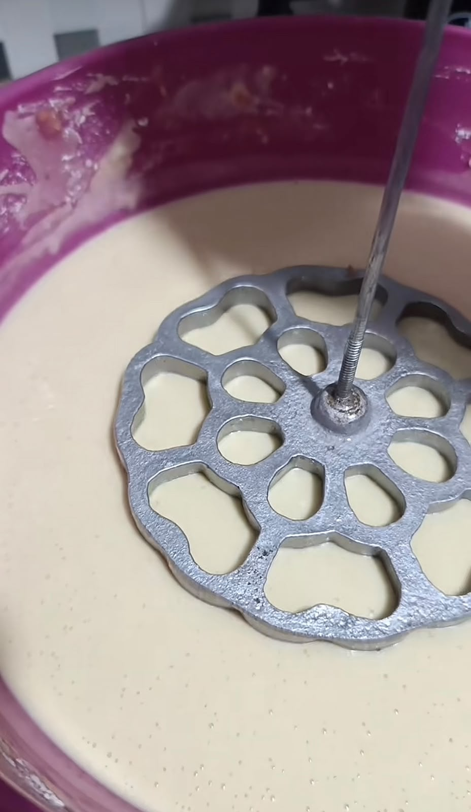
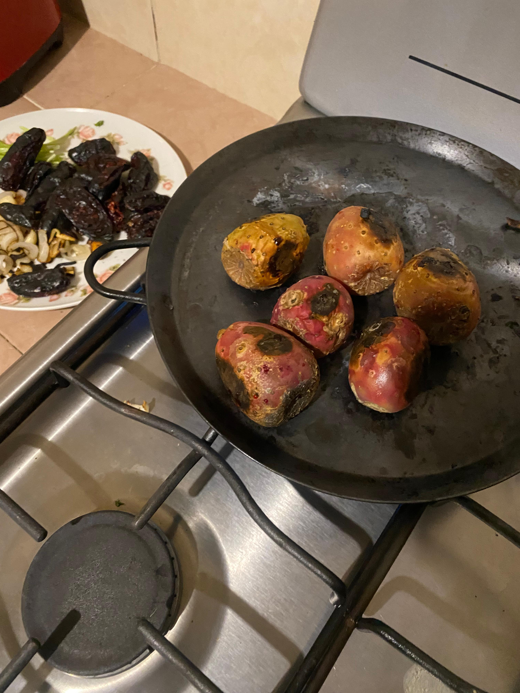
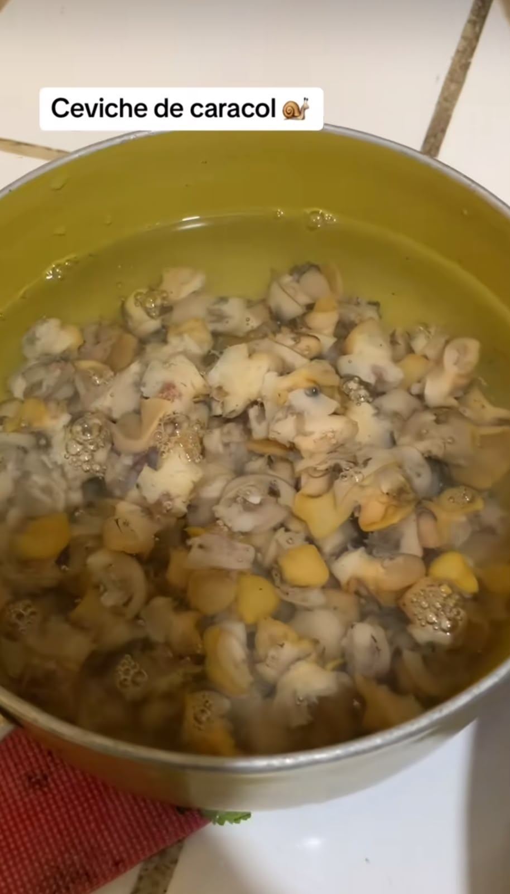

Imágenes del proyecto
Galería
Momentos de preparación, ingredientes y convivencia comunitaria.

Ingredientes
Ingredientes ceviche de caracol
Preparando
Preparando
Preparando
Xoconostle Preparando salsa de Xoconostle
Preparando salsa de Xoconostle

Preparando ceviche de caracol